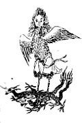

"Gou Mang" is one of the most ancient figures in the lengends. He is the first son of ancient god "Fu Xi." His father assigned him to the east to monitor the Jupiter. In China, East is also perceived as woods, so he is also called as the god of wood or god of Spring.
His appearance is usually a bird with a human face. His ride are two "Long". But as the time pass his effect get weekened. He then transformed to an appearance of a child who rides on a bufflo.